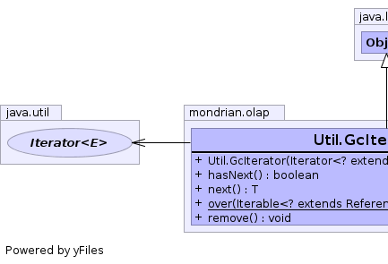
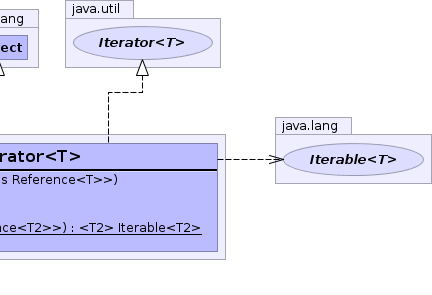

T - Element typepublic static class Util.GcIterator<T> extends Object implements Iterator<T>
 |
 |
| Constructor and Description |
|---|
Util.GcIterator(Iterator<? extends Reference<T>> iterator) |
public Util.GcIterator(Iterator<? extends Reference<T>> iterator)